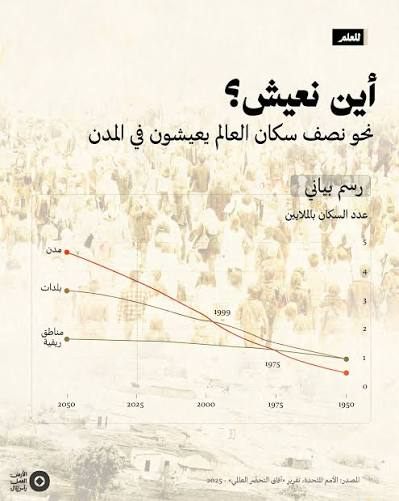
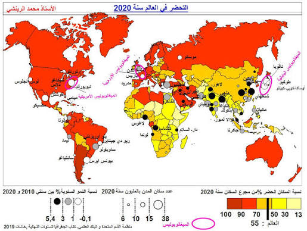
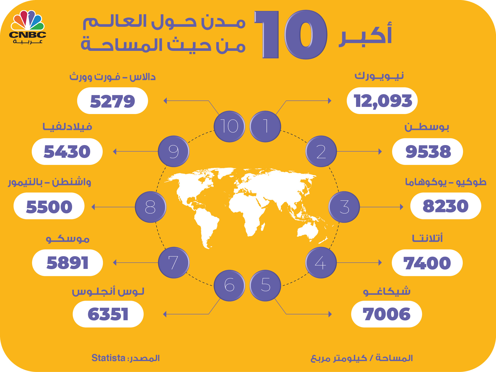
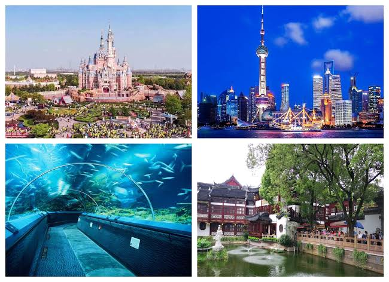
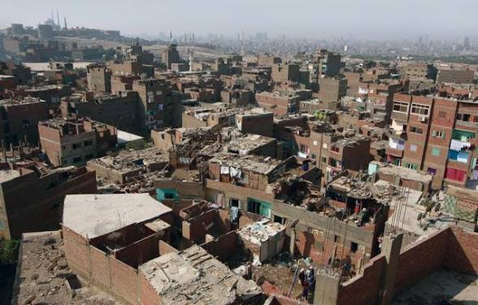
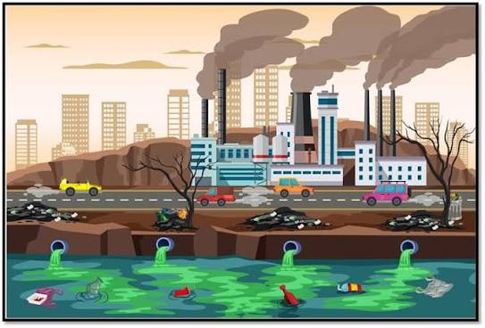

الانفجار الحضري
مقدمة
لئن ظهرت المدن منذ آلاف السنين فإن ظاهرة التحضر تعد حديثة، حيث انطلقت منذ منتصف القرن الثامن عشر خاصة مع الثورة الصناعية لتشمل كامل أنحاء العالم. وقد ارتفع عدد سكان المدن في العالم من 724 مليون نسمة سنة 1950 إلى أكثر من 4.4 مليار نسمة سنة 2022، أي ما يعادل 57% من مجموع سكان العالم، ومن المتوقع أن يصل إلى 6.7 مليار نسمة سنة 2050 (أي 68% من سكان العالم). ويُقصد بالانفجار الحضري التسارع الكبير في عدد سكان المدن وامتدادها المجالي، وهو ظاهرة تمسّ خاصة البلدان النامية.
فما هو مفهوم الظاهرة الحضرية؟ وما هي مظاهر وعوامل التحضر وأهم انعكاساته؟
I مفهوم الظاهرة الحضرية
1. التحضر ونسبة التحضر
أ. التحضر
التحضر هو تزايد المدن من حيث العدد والحجم والامتداد المجالي وكيفية استخدام الأرض ونمط العيش المميز، وهو ظاهرة عالمية انطلقت منذ منتصف القرن الثامن عشر مع الثورة الصناعية في أوروبا الغربية قبل أن تشمل كامل أنحاء العالم.
ب. نسبة التحضر
هي نسبة سكان المدن من مجموع السكان في منطقة ما وفي تاريخ محدد. وترتفع هذه النسبة في البلدان المتقدمة (أكثر من 75%) لتبلغ في بعضها أكثر من 90% كما هو الحال في بلجيكا واليابان، بينما تبقى دون 50% في عديد البلدان النامية خاصة في إفريقيا وآسيا الجنوبية.
2. مقاييس التحضر
أ. تعريف المدينة
المدينة هي كل تجمع سكني يبلغ حجماً معيناً من السكان يختلف من بلد إلى آخر تهيمن فيه أنشطة غير فلاحية.
ب. المقياس الكمي
يعتمد على العدد الأدنى للسكان المجتمعين، والذي يختلف من بلد إلى آخر. فتجمع 200 ساكن في الدنمارك يشكل مدينة، بينما يجب أن يكون العدد 50 ألف ساكن في اليابان. أما في تونس فيُعتمد المقياس الإداري، فكل مركز بلدية يعتبر مدينة دون اعتبار لعدد السكان.
ج. المقياس المشهدي
يقوم على وجود نواة (مركز) تنتظم حولها مباني كثيفة ومتلاصقة تستخدم في أنشطة مختلفة، وتربط شبكات نقل بين أطراف المدينة ومركزها.
د. المقاييس الوظيفية والنوعية
تقوم المدينة على أنشطة غير فلاحية مثل الصناعة والخدمات، كما تتميز بثقافة ونمط عيش مميز يختلف عن نمط عيش الريف.
II مظاهر التحضر
1. الانفجار الحضري في العالم النامي
أ. تعريف الانفجار الحضري
الانفجار الحضري هو تسارع كبير لعدد سكان المدن، وهو ظاهرة تمسّ خاصة البلدان النامية.
ب. الأرقام الأساسية للانفجار الحضري
تزايد عدد السكان الحضر في العالم بنسق سريع ليقفز من 724 مليون نسمة سنة 1950 إلى أكثر من 4.4 مليار نسمة سنة 2022، أي بنسبة 57% من مجموع السكان في العالم. ويعود ذلك إلى ظاهرة الانفجار الحضري في البلدان النامية، حيث ارتفع نصيب العالم النامي من السكان الحضر في العالم ليبلغ 76% أي ما يعادل حوالي 3.5 مليار نسمة سنة 2019. ونتيجة لذلك أصبح العالم النامي يحتوي 8 حواضر (مدن كبرى) من بين العشرة مدن الأولى في العالم، بينما كانت 3 حواضر فقط سنة 1950.
ومن أكبر المدن الكبرى في العالم سنة 2023: طوكيو (37 مليون نسمة)، دلهي (32 مليون)، شنغهاي (28 مليون)، دكا (23 مليون)، ساو باولو (22 مليون)، والقاهرة (22 مليون)، ومكسيكو سيتي (22 مليون)، وبكين (21 مليون)، ومومباي (21 مليون)، وأوساكا (19 مليون).
2. تفاوت درجات التحضر بين بلدان العالم
تتفاوت درجات التحضر بين بلدان العالم تفاوتاً كبيراً: ففي البلدان المتقدمة بلغت نسبة التحضر أكثر من 75% (بلجيكا 98%، اليابان 92%، أستراليا 86%، الولايات المتحدة 83%)، بينما تبقى في البلدان النامية دون 50% في عديدها (الهند 35%، إفريقيا جنوب الصحراء 42%، جنوب آسيا 40%)، مع وجود تفاوت كبير بين البلدان النامية نفسها (البرازيل 87%، الأرجنتين 92%، الصين 65%). ويمكن تمييز ثلاثة مستويات كبرى: بلدان ذات تحضر مرتفع، وبلدان ذات تحضر متوسط، وبلدان ذات تحضر ضعيف.
III عوامل التحضر وانعكاساته
1. عوامل التحضر
أ. في العالم المتقدم
يُفسَّر ارتفاع التحضر في العالم المتقدم بالنمو الاقتصادي وبقدم ظاهرة التحضر التي تعود إلى الثورة الصناعية في القرن الثامن عشر، إذ أدى تطور الصناعة والمعامل إلى استقطاب أعداد هامة من السكان نحو المدن، ثم عزّز قطاع الخدمات المتطور هذه الجاذبية.
ب. في العالم النامي
يمكن أن نفسر ارتفاع التحضر في العالم النامي بالعوامل التالية:
- ارتفاع التزايد الطبيعي لسكان المدن.
- ارتفاع معدل النمو الطبيعي في الأرياف مع تزايد البطالة ومكننة الفلاحة، الأمر الذي زاد في نسق النزوح الريفي.
- تنامي القطاع الصناعي والخدمي في المدن مما وفّر مواطن شغل واستقطب أعداداً هامة من المهاجرين خاصة من الأرياف.
- الثقل الديمغرافي للعالم النامي خاصة الصين والهند مما ساهم في تشكل مدن مليونية.
2. انعكاسات التحضر (الانفجار الحضري) في البلدان النامية
أ. مجالياً
- توسع المدن على حساب الأراضي الزراعية.
- توسع المدن على الأطراف في شكل ضواحي غالباً ما تكون فوضوية البناء وقليلة التجهيزات الأساسية.
- يتميز عديد هذه المدن بالمحافظة على نمط عيش أقرب إلى الريف منه إلى المدينة.
ب. بيئياً
يتسبب التوسع السريع للمدن وتزايد أعداد الحضر في ارتفاع معدلات التلوث في التربة والمياه بسبب تزايد النفايات، وتلوث الهواء لكثرة المصانع والسيارات، إضافة إلى الضغط على الموارد الطبيعية والانبعاثات الكربونية التي تساهم في تغير المناخ.
ج. اجتماعياً
- تزايد الطلب على الحاجيات الأساسية مثل الصحة والمواد الأساسية الغذائية والماء والكهرباء والسكن والتعليم.
- تفاقم البطالة بسبب عدم قدرة القطاع الصناعي والخدمي على استيعاب العدد الكبير من العاطلين.
- انتشار الأمراض الاجتماعية كالجريمة والسرقة والتسول وأطفال الشوارع.
- ارتفاع أسعار العقارات والإيجارات، مما يزيد من معاناة الفئات الاجتماعية الفقيرة.
خاتمة
يُعدّ الانفجار الحضري ظاهرة بنيوية في العالم المعاصر، إذ يعيش أكثر من نصف سكان العالم في المدن، ومن المتوقع أن ترتفع هذه النسبة إلى 68% سنة 2050. وتترتب عن هذه الظاهرة انعكاسات متعددة مجالياً وبيئياً واجتماعياً، خاصة في البلدان النامية التي تعرف تحضراً متسارعاً دون أن يرافقه نمو اقتصادي واجتماعي مماثل، مما يطرح تحديات كبرى أمام سياسات التهيئة الترابية والتنمية المستدامة.
📖 تعريفات
🌍 دول ومناطق
- طوكيو: العاصمة اليابانية وأكبر تجمع حضري في العالم، إذ يبلغ عدد سكان تجمعها الحضري حوالي 37 مليون نسمة سنة 2023.
- دلهي: العاصمة الهندية وثاني أكبر تجمع حضري في العالم بحوالي 32 مليون نسمة سنة 2023، وهي مثال على الانفجار الحضري في البلدان النامية.
- شنغهاي: كبرى مدن الصين الاقتصادية وثالث أكبر تجمع حضري في العالم بحوالي 28 مليون نسمة سنة 2023.
- القاهرة: عاصمة مصر وكبرى مدن إفريقيا والعالم العربي بحوالي 22 مليون نسمة سنة 2023، وهي مثال على المدن المليونية في البلدان النامية.
- ساو باولو: أكبر مدينة في البرازيل وإحدى أكبر مدن العالم بحوالي 22 مليون نسمة سنة 2023، وتُعد العاصمة الاقتصادية للبرازيل.
- بلجيكا: بلد أوروبي متقدم يبلغ فيه معدل التحضر 98%، وهو من أعلى المعدلات في العالم.
- اليابان: بلد متقدم في شرق آسيا يبلغ فيه معدل التحضر 92%، ويعتمد على تعريف صارم للمدينة (50 ألف ساكن على الأقل).
- الدنمارك: بلد أوروبي متقدم يُعتمد فيه المقياس الكمي المنخفض، إذ يكفي تجمع 200 ساكن لاعتباره مدينة.
- الهند: من أكبر بلدان العالم سكانياً، يبلغ معدل التحضر فيها 35% فقط، وتشهد مدنها الكبرى (دلهي، مومباي) انفجاراً حضرياً كبيراً.
- الصين: من أكبر بلدان العالم سكانياً، بلغ معدل التحضر فيها 65%، وتضم عديد المدن المليونية (شنغهاي، بكين).
- إفريقيا جنوب الصحراء: من أقل مناطق العالم تحضراً (42%)، لكنها تعرف انفجاراً حضرياً سريعاً دون نمو اقتصادي مماثل.
📌 أخرى
- التحضر: تزايد المدن من حيث العدد والحجم والامتداد المجالي وكيفية استخدام الأرض ونمط العيش المميز، وهو ظاهرة عالمية انطلقت منذ منتصف القرن الثامن عشر مع الثورة الصناعية.
- نسبة التحضر: نسبة سكان المدن من مجموع السكان في منطقة ما وفي تاريخ محدد. ترتفع في البلدان المتقدمة (أكثر من 75%) وتنخفض في عديد البلدان النامية (دون 50%).
- المدينة: كل تجمع سكني يبلغ حجماً معيناً من السكان يختلف من بلد إلى آخر، تهيمن فيه أنشطة غير فلاحية كالصناعة والخدمات، ويتميز بنمط عيش حضري مميز.
- الانفجار الحضري: تسارع كبير لعدد سكان المدن، ويُعدّ ظاهرة مميزة للبلدان النامية التي تعرف تحضراً سريعاً دون نمو اقتصادي مماثل. انتقل عدد سكان المدن في العالم من 724 مليون نسمة سنة 1950 إلى أكثر من 4.4 مليار سنة 2022.
- المقياس الكمي: مقياس لتعريف المدينة يعتمد على العدد الأدنى للسكان المجتمعين، ويختلف من بلد إلى آخر (200 ساكن في الدنمارك، 50 ألف في اليابان، مقياس إداري في تونس).
- المقياس المشهدي: مقياس لتعريف المدينة يقوم على وجود نواة (مركز) تنتظم حولها مباني كثيفة ومتلاصقة تستخدم في أنشطة مختلفة، وتربط شبكات نقل بين أطراف المدينة ومركزها.
- المقياس الوظيفي: مقياس لتعريف المدينة يقوم على هيمنة الأنشطة غير الفلاحية (الصناعة والخدمات) وعلى نمط عيش حضري مميز يختلف عن نمط عيش الريف.
- النزوح الريفي: هجرة سكان الأرياف نحو المدن، ويُعدّ من أهم عوامل الانفجار الحضري في البلدان النامية، ويفسّره تزايد البطالة ومكننة الفلاحة وتدني مستوى العيش في الأرياف.
- المدينة المليونية: المدينة التي يتجاوز عدد سكانها المليون نسمة، وقد تزايد عددها بشكل كبير في البلدان النامية بفعل الانفجار الحضري.
- الضواحي: مناطق حضرية على أطراف المدن، غالباً ما تكون فوضوية البناء وقليلة التجهيزات الأساسية، وتشهد اكتظاظاً سكانياً كبيراً في البلدان النامية.
- التهيئة الترابية: مجموع الإجراءات والخطط التي تضعها الدولة لتنظيم المجال الترابي وتوزيع الأنشطة والسكان بشكل متوازن، وهي من أهم الوسائل لمواجهة انعكاسات الانفجار الحضري.
📅 سنوات وفترات
- القرن 18: انطلاق ظاهرة التحضر مع الثورة الصناعية في أوروبا الغربية.
- 1950: بلغ عدد سكان المدن في العالم 724 مليون نسمة، وكان العالم النامي يحتوي 3 حواضر فقط من بين العشرة مدن الأولى في العالم.
- 2019: بلغ عدد سكان المدن في العالم أكثر من 4 مليار نسمة (55.7% من سكان العالم)، وبلغ نصيب العالم النامي 76% (حوالي 3.5 مليار نسمة)، وأصبح يحتوي 8 حواضر من بين العشرة مدن الأولى في العالم.
- 2022: بلغ عدد سكان المدن في العالم أكثر من 4.4 مليار نسمة، أي ما يعادل 57% من مجموع سكان العالم.
- 2023: تصدّرت طوكيو (37 مليون نسمة) قائمة أكبر المدن في العالم، تليها دلهي (32 مليون)، ثم شنغهاي (28 مليون).
- 2050: من المتوقع أن يبلغ عدد سكان المدن في العالم 6.7 مليار نسمة، أي 68% من سكان العالم، وأن يتركز معظم النمو الحضري في البلدان النامية.
🗺️ خرائط ومعطيات مصورة





